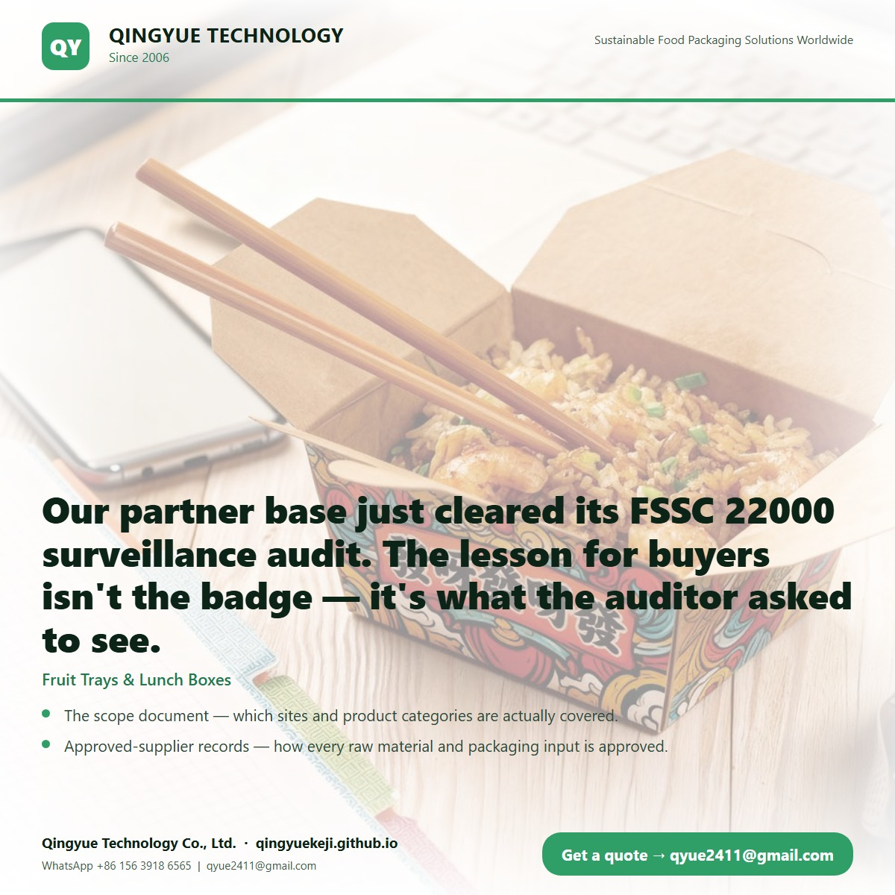
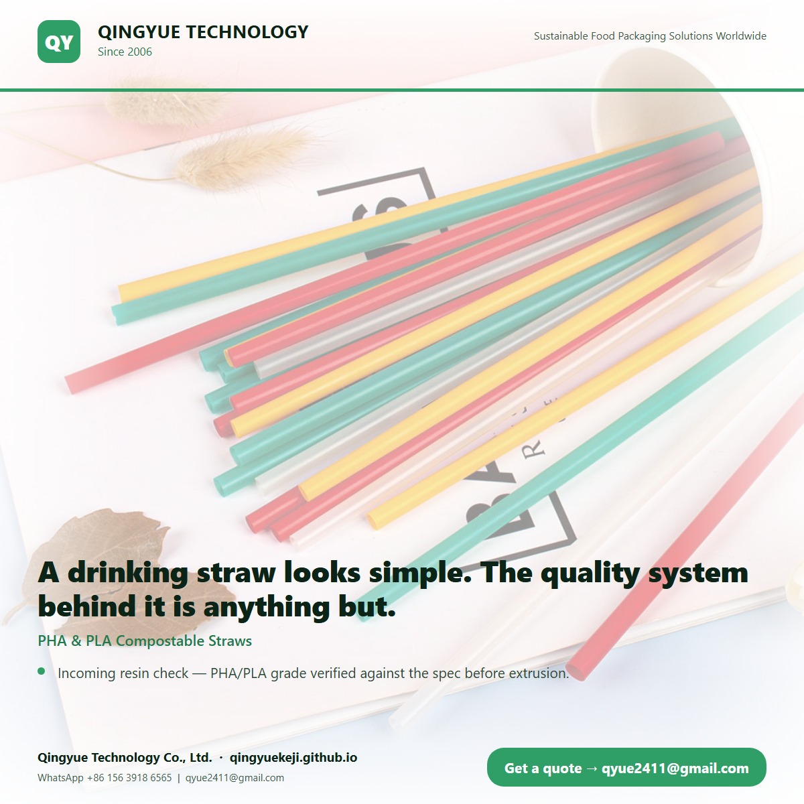
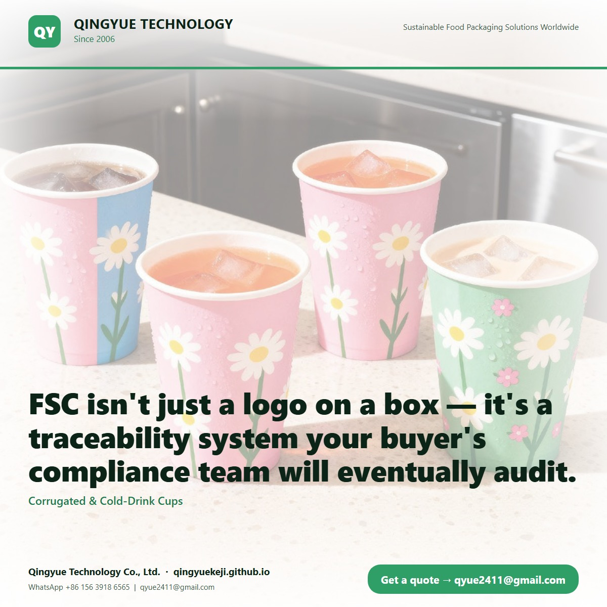
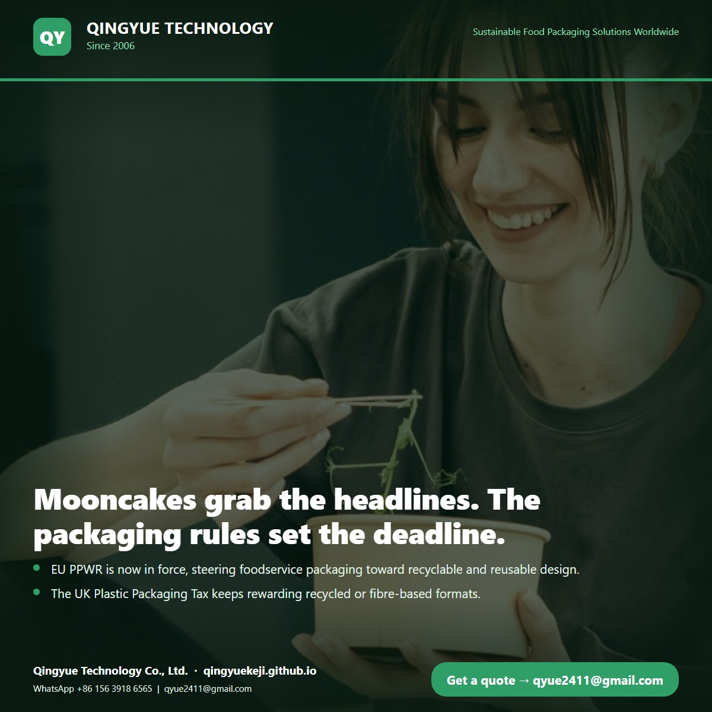
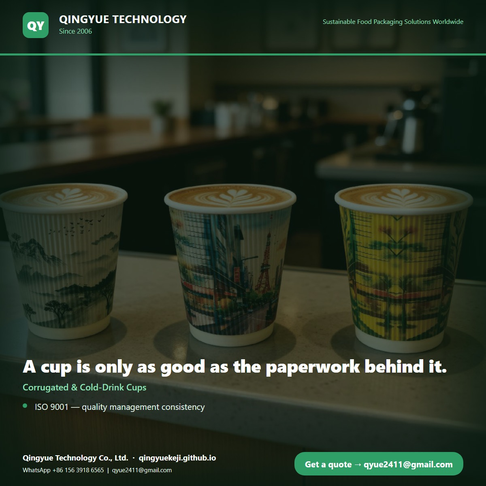

· Paper Bags: Rope, Flat & Gift / 纸袋（圆绳/扁绳/礼品袋）
Most bakery bags fail in the same spot: where the rope meets the paper.
On our partner manufacturing base, the rope handle is threaded through a punched hole and glued onto a reinforcing kraft patch inside the top edge. That patch is why a full bag doesn't tear at the handle. QC loads a sample the way a customer would, hangs it from the handle and waits. Then they pull the rope sideways, checking the patch and glue line for lift or fibre tear. A creased bag, an open seam or a lifted patch goes back. FSC-certified paper, sizes and print to suit your counter. Shall we send samples? #PaperBags #KraftPackaging #FoodservicePackaging #FSC

· FSSC 22000
Our partner base just cleared its FSSC 22000 surveillance audit. The lesson for buyers isn't the badge — it's what the auditor asked to see.
FSSC 22000 sits on ISO 22000 with PRPs, and it's GFSI-recognised. That means it's checked across manufacturing, storage, distribution and supplier management, not a single line. Four things importers should ask for: • The scope document — which sites and product categories are actually covered. • Approved-supplier records — how every raw material and packaging input is approved. • Batch-level traceability — can they walk raw material to finished carton? • Complaint handling and mock recall — tested with records, not promised. Qingyue Technology is a China-based supplier and exporter; the 60,000 m² partner base also holds ISO 9001, BSCI, FSC and HACCP. Send your product list and destination market, and we'll return our FSSC documents. #FSSC22000 #FoodSafety #FoodservicePackaging #ExportChina #Compliance

· PHA & PLA Compostable Straws / PHA / PLA 吸管
A drinking straw looks simple. The quality system behind it is anything but.
Behind every PHA & PLA compostable straw order at our partner manufacturing base (60,000 m², ISO 9001 / FSSC 22000 / HACCP), QC runs before, during and after production: • Incoming resin check — PHA/PLA grade verified against the spec before extrusion. • In-line inspection — diameter, wall thickness, bend and mouthfeel tested through the run. • Lab testing — food-contact and compostability checks, with OK Compost HOME scope confirmed per item. • UV sterilisation before packing, then sealed and lot-coded for traceability. We're the supplier and exporter, not the factory — so we chase the paperwork and the samples for you. Sourcing compostable straws for a home-compost claim? Send your diameter, length and target market; we'll match the spec. #CompostableStraws #PHAPLA #HomeCompostable #FoodservicePackaging #QualityControl

· FSC
FSC isn't just a logo on a box — it's a traceability system your buyer's compliance team will eventually audit.
At our partner manufacturing base (60,000 m², 6,000+ staff), the FSC chain-of-custody review just wrapped. What buyers should take from it: • FSC covers the fibre, but a foodservice item also needs food-safety systems (FSSC 22000, HACCP) and social compliance (BSCI) working alongside it. • Chain-of-custody certificates are site- and scope-specific — match them to your exact SKU list before you quote. • "FSC-certified" claims need supporting documents at shipment, not just a product photo. We're a supplier and exporter, so we make sure these are ready before you ask. Planning an FSC-certified paper cup, bowl or food box line? Send us your spec list and we'll confirm the certification scope that fits. #FSC #SustainablePackaging #FoodservicePackaging #ExportChina #Compliance

· Factory news: Factory news: 玖荣集团·中秋雅集，月圆人团圆
Mooncakes grab the headlines. The packaging rules set the deadline.
This month our partner manufacturing base marked Mid-Autumn — 月圆人团圆, one team, one table. Festival demand is rising fast, and so is the regulation around it: • EU PPWR is now in force, steering foodservice packaging toward recyclable and reusable design. • The UK Plastic Packaging Tax keeps rewarding recycled or fibre-based formats. • Seasonal peaks expose weak supply chains — gifting, takeaway and catering spike together. For importers, the lesson is timing: confirm compostable and fibre specs before the rush, not during it. Qingyue Technology is a China-based supplier and exporter; our partner base spans 60,000 m² with ISO 9001, FSSC 22000, HACCP, FSC and BSCI. Send your Q4 or festival spec list — we'll come back with sheet matches and samples. #EcoPackaging #PlasticBan #PPWR #FoodservicePackaging #Sourcing

· Corrugated & Cold-Drink Cups / 瓦楞杯 / 冷饮杯
A cup is only as good as the paperwork behind it.
Cold-drink and ripple-wall cups look simple — until a buyer asks which certificate covers food contact. Here's what we can document, mapped to your market: • ISO 9001 — quality management consistency • FSSC 22000 & HACCP — food-safety systems • FSC — chain of custody for paperboard • BSCI — social compliance audit • OK Compost HOME — for qualifying compostable items Qingyue Technology is a China-based supplier and exporter. Our partner manufacturing base spans 60,000 m² and holds these certifications; scope and product-specific declarations are shared on request. Request our compliance pack and 8–23 oz samples — tell us ripple or single wall. #FoodPackaging #PaperCups #Certification #FSSC22000 #ExportSupplier